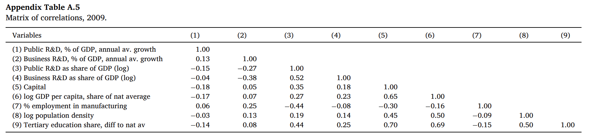

── Attaching core tidyverse packages ──────────────────────── tidyverse 2.0.0 ──
✔ dplyr 1.2.1 ✔ readr 2.2.0
✔ forcats 1.0.1 ✔ stringr 1.6.0
✔ ggplot2 4.0.3 ✔ tibble 3.3.1
✔ lubridate 1.9.5 ✔ tidyr 1.3.2
✔ purrr 1.2.2
── Conflicts ────────────────────────────────────────── tidyverse_conflicts() ──
✖ dplyr::filter() masks stats::filter()
✖ dplyr::lag() masks stats::lag()
ℹ Use the conflicted package (<http://conflicted.r-lib.org/>) to force all conflicts to become errors
library(modelr)library(flextable)
Attaching package: 'flextable'
The following object is masked from 'package:purrr':
compose
library(plm)
Attaching package: 'plm'
The following objects are masked from 'package:dplyr':
between, lag, lead
library(vtable)
Loading required package: kableExtra
Attaching package: 'kableExtra'
The following objects are masked from 'package:flextable':
as_image, footnote
The following object is masked from 'package:dplyr':
group_rows
library(rstatix)
Attaching package: 'rstatix'
The following object is masked from 'package:stats':
filter
library(modelsummary)options(paged.print =FALSE)
load(file ='eu0823.RData', verbose =TRUE)
Loading objects:
eu0823
1) Sammendrag
Fitjar (2025) (KILDE!!!) undersøker hvordan offentlige midler til forskning og utvikling (FoU) fordeles mallom europeiske regioner, og om fordelingen bidrar til å opprettholde eller forsterke regionale forskjeller. Studien bruker data fra Eurostat for 200 europeiske regioner i perioden 2009-2018 og sammenligner utviklingen i offentlig FoU med FoU i næringslivet.
Resultatene viser at mer utviklede regioner mottar mer oppentlige FoU-midler, særlig i sammenheng med høyere humankapital og mer FoU i næringslivet. Studien finner beta-konvergens i offentlig FoU, som betyr at regioner med lave utdanningsnivåer har hatt raskere vekst. Likevel finner den ikke sigma-konvergens, altså en reduksjon i den samlede spredningen mellom regionene. For næingslivets FoU finner studien begge former for konvergens. Fitjar konkluderer med at offentlig FoU-finansiering i stor grad kanaliseres til allerede ressurssterke regioner og dermed kan bidra til å opprettholde eller forsterke regionale forskjeller.
2) Systemet med NUTS regioner i EUs regional-data
NUTS står for “Nomenclature of Territorial Units for Statistics” og er EUś system for å dele land inn i geografiske områder til statistiske formål. Systemet brukes av Eurostat for å organisere regional statistikk og gjøre det lettere å sammenligne blant annet økonomi, befoklning og forskningsaktivitet mellom regioner i ulike land. (KILDE EUROSTAT!!!)
Inndelingen er hierarkisk og består av tre nivåer. NUTS 1 omfatter store sosioøkonomiske regioner, NUTS 2 omfatter mindre regioner som er særlig viktige for regionalpolitikk, og NUTS 3 omfatter små regioner for mer dataljerte analyser. En NUTS 1-region deles dermes inn i NUTS 2-regioner, som igjen deles inn i NUTS 3-regioner.
Inndelingen bygger så langt som mulig på eksisterende administrative grenser. Det finnes også veiledende befolkningsgrenser for hvert nivå for å gjøre regionene mer sammenlignbare. NUTS gjør det mulig å undersøke forskjeller innad i land som ellers kan bli skjult når man bare sammenligner nasjonale gjennomsnitt.
Vårt datasett har 3136 observasjoner, mens Fitjar (2025) har 2000 for de fleste variablene. Datasettet vårt dekker perioden 2008-2023, mens artikkelens hovedanalyse dekker 2009-2018. Gjennomsnittet for logaritmert BNP er -0,084 i begge tabellene, og utdanningsvariabelen har også et relativt likt gjennomsnitt. Befokningstettheten er noe høyere hoss oss, mens andelen hovedstadsregioner er litt lavere.
Industrivariabelen skiller seg mest ut, med et stanadardavvik på 14,1 hos oss mot 7,379 i artikkelen. Maksimumsverdien på 116 bør undersøkes dersom variabelen måler en prosentandel. FoU-variablene kan ikke sammenlignes direkte, siden artikkelen bruker logaritmerte verdier. Samlet ligner datasettene på flere områder, men forskjeller i periode, utvalg, og variabelbehandling begrenser sammenlignbarheten.
Korrelasjonsmatrise 2009
# Velger bare observasjoner fra 2009 og de aktuelle variablenekorrelasjon_2009 <- eu0823 |>filter(time ==2009) |>select(pub_RD, priv_RD, Capital, GDP_log, Manuf, Density_log, edu) |> rstatix::cor_mat() |> rstatix::pull_lower_triangle(diag =TRUE)# Viser resultatet som en tabellflextable::flextable(korrelasjon_2009) |> flextable::theme_booktabs() |> flextable::autofit()
rowname
pub_RD
priv_RD
Capital
GDP_log
Manuf
Density_log
edu
pub_RD
1
priv_RD
0.5
1
Capital
0.32
0.14
1
GDP_log
0.26
0.28
0.66
1
Manuf
-0.0053
0.2
0.0011
0.22
1
Density_log
0.25
0.14
0.45
0.46
0.31
1
edu
0.42
0.25
0.64
0.62
0.16
0.44
1
Korrelasjonsmatrise Fitjar
Sammenligning korrelasjonsmatrise 2009
Korrelasjonsmatrisen vår viser flere likheter med tabell A5 i Fitjar (2025). Korrelasjonen mellom offentlig og privat FoU er 0,50 hos oss mot 0,52 i artikkelen. Sammenhengen mellom hovedstadregion og BNP er også relativt lik, med 0,66 hos oss mot 0,65 i artikkelen. Utdanning er positivt korrelert med BNP i begge datasettene, men sammenhengen er noe svakere hos oss med 0,62 mot 0,69 i artikkelen.
Industrivariabelen viser tydelige foskjeller. Korrelasjonen med offentlig FoU er omtrent 0 hos oss mot -0,44 i artikkelen. Sammenhengene med BNP, utdanning og befolkningstetthet er positive hos oss og nagative i artikkelem. Forskjellene kan ha sammenheng med at industrivariabelen har ulik fordeling i datasttene. Samlet samsvarer flere av sammenhengene godt, men særlig industrivariabelen skiller seg ut. Artikkelens bruk av logaritmerte FoU-variabler begrenser også den direkte sammenlignbarheten.
5) Sammenligning korrelasjonsmatrise 2009-2023 og 2009
Korrelasjonsmatrise fra 2008-2023
# Velger perioden og variablenekorrelasjon_alle <- eu0823 |>filter(time >=2008, time <=2023) |>select(pub_RD, priv_RD, Capital, GDP_log, Manuf, Density_log, edu) |> rstatix::cor_mat() |> rstatix::pull_lower_triangle(diag =TRUE)# Viser korrelasjonsmatrisen som en tabellflextable::flextable(korrelasjon_alle) |> flextable::theme_booktabs() |> flextable::autofit()
rowname
pub_RD
priv_RD
Capital
GDP_log
Manuf
Density_log
edu
pub_RD
1
priv_RD
0.41
1
Capital
0.28
0.15
1
GDP_log
0.22
0.34
0.64
1
Manuf
-0.032
0.26
-0.037
0.22
1
Density_log
0.25
0.19
0.45
0.43
0.3
1
edu
0.38
0.3
0.69
0.72
0.17
0.47
1
Korrelasjonsmatrise Table A5 Fitjar

Sammenligning
Når vi sammenligner vår korrelasjonsmatrise for 2008-2023 med Fitjar (2025) matrise for 2009 i tabell A.5, finner vi både likheter og forskjeller. Korrelasjonen mellom utdanning og BNP er 0,72 hos oss mot 0,69 hos Fitjar. Dette er nærmere artikkelens verdi enn vår korrelasjon på 0,62 for 2009. Sammenhengen mellom offentlig og privar FoU samsvarer derimot dårligere. Den er 0,41 for hele perioden, sammenlignet med 0,52 hos Fitjar og 0,50 i våre 2009-data. Industrivariabelen har fortsatt flere sammenhenger med motsatt fortegn sammenlignet med artikkelen. Hele perioden gir dermed samsvar for enkelte korrelasjoner, men ikke et entydig bedre samsvar samlet sett.
6) Variablene GDP, Manuf og Destiny
Variabalen GPD måler regionens BNP per innbygger relativt til landsgjennomsnittet. I analysen brukes den naturlige logariten av dette forholdet. Variabelen viser dermed regionens økonomiske nivå sammenlignet med landet den tilhører.
Variabelen Manuf måler hvor stor prosentandel av den samlede sysselsettingen i regionen som er innen industriproduksjon. Variabelen beskriver hvor indusripreget regionens næringsstrukttur er.
Destiny måler befolkningstettheten, altså innbyggere per kvadrarkilometer. I analysen brukes den naturlige logaritmen av befolkningstetthete.
7) NUTS 2 regioner GPD, Manuf og Destiny
# Beregner gjennomsnitt for hver regionregionverdier <- eu0823 |>group_by(geo, name) |>summarise(across(c(GDP, Manuf, Density),~mean(.x, na.rm =TRUE) ),.groups ="drop" )# Finner fem høyeste og fem laveste for hver variabeltopp_bunn <- regionverdier |>pivot_longer(cols =c(GDP, Manuf, Density),names_to ="Variabel",values_to ="Verdi" ) |>filter(is.finite(Verdi)) |>group_by(Variabel) |>group_modify(~bind_rows( .x |>slice_max(Verdi, n =5, with_ties =FALSE) |>mutate(Gruppe ="Høyest"), .x |>slice_min(Verdi, n =5, with_ties =FALSE) |>mutate(Gruppe ="Lavest") )) |>ungroup() |>select(Variabel, Gruppe, geo, name, Verdi)# Viser resultateneflextable::flextable(topp_bunn) |> flextable::colformat_num(j ="Verdi", digits =2) |> flextable::autofit()
Variabel
Gruppe
geo
name
Verdi
Density
Høyest
ES64
Ciudad de Melilla
6,038.4062500
Density
Høyest
AT13
Wien
4,605.8125000
Density
Høyest
ES63
Ciudad de Ceuta
4,240.6562500
Density
Høyest
DE30
Berlin
4,062.1187500
Density
Høyest
HU11
Budapest
3,359.5250000
Density
Lavest
SE33
Övre Norrland
3.3812500
Density
Lavest
SE32
Mellersta Norrland
5.2562500
Density
Lavest
FI1D
Pohjois- ja Itä-Suomi
6.3500000
Density
Lavest
SE31
Norra Mellansverige
13.2125000
Density
Lavest
FI19
Länsi-Suomi
23.5750000
GDP
Høyest
SK01
Bratislavský kraj
2.3879959
GDP
Høyest
RO32
Bucureşti-Ilfov
2.3258080
GDP
Høyest
CZ01
Praha
2.2081531
GDP
Høyest
HU11
Budapest
2.1213898
GDP
Høyest
PL91
Warszawski stołeczny
2.1022928
GDP
Lavest
ITF6
Calabria
0.6036980
GDP
Lavest
ITG1
Sicilia
0.6216491
GDP
Lavest
RO21
Nord-Est
0.6245508
GDP
Lavest
BG31
Severozapaden
0.6313091
GDP
Lavest
HU31
Észak-Magyarország
0.6363246
Manuf
Høyest
ITC4
Lombardia
112.3956250
Manuf
Høyest
DE11
Stuttgart
64.5118750
Manuf
Høyest
ES51
Cataluña
60.6906250
Manuf
Høyest
ITH3
Veneto
60.0606250
Manuf
Høyest
PL22
Śląskie
58.6850000
Manuf
Lavest
ES64
Ciudad de Melilla
0.1000000
Manuf
Lavest
ES63
Ciudad de Ceuta
0.1173125
Manuf
Lavest
EL62
Ionia Nisia
0.4181250
Manuf
Lavest
EL41
Voreio Aigaio
0.4400000
Manuf
Lavest
ITC2
Valle d’Aosta/Vallée d’Aoste
0.6275000
GPD
De høyeste verdiene for GDP finnes i hovedstadregioner, mens de laveste finnes i Sør-Italia, nordøstlige Romania og nordvestlige Bulgaria. Dette virkeer rimelig ut fra at hovedstadregioner ofte samler mye økonomisk aktivitet. Variabelen måler BNP per innbygger relativt til eget landsgjennomsnitt. Bratislavský kraj sin verdi på omtrent 2,39 betyr dermed at BNP per inbygger ligger rundt 139 prosent over landsgjennomsnittet. Rangeringen viser derfor ikke nødvendigvis hvilke regioner som er rikest i Europa i absolutte tall.
Manuf
De høyeste verdiene finnes blant annet i norditalienske regioner og Sluttgart, mens de laveste finnes i mindre by-, øy-, og fjellregioner. Rangeringen kan virke rimelig, men verdiene samsvarer ikke uten videre med artikkelens definisjon av Manuf som prosentandelen sysselsatte innen industriproduskjon. Lombardia har et gjennomsnitt på 112,4 som ikke kan være en prosentandel. Måleenheten og beregningen i datasettet bør derfor undersøkes før tallene tolkes som industriandeler.
Density
De høyeste verdiene finnes i avgrensede byregioner, mens de laveste finnnes i større områder i Sverige og Finland. Dette virker rimelig fordi byområder har mange innbyggere på lite areal, mens større nordiske regioner kan ha mye ubebodd areal. Melilla har en gjennomsnitlig befolkningstetthet på 6038 mens Ovre Norrland har omtrent 3,38.
8) Land regioner og tidsperiode Fitjar
Fitjar (2025) undersøker 200 regioner, 20 europeiske land i perioden 2009-2018.
Vårt datasett omfatter 196 NUTS-2 regioner i 17 land i perioden 2008-2023, totalt 3136 observasjoner. Fitjar (2025) undersøker 200 regioner, 20 europeiske land i perioden 2009-2018, med 2000 observasjoner. Vårt datasett har dermed fem færre land og fire færre regioner, men dekker 16 år sammenlignet med Fitjar sine 10 år. Den lengre tidsperioden gir flere observasjoner, selv om den geografiske dekningen er mindre. Forskjellene i utvalg og tidsperiode kan bidra til at resultatene våre avviker fra artikkelen.
Det kan være fornuftlig å utelate regionene dersom de har særtrekk eller peroblemer med datakvaliteten som gjør dem lite sammenlignbare med resten av regionene. Samtidig er lave eller høye verdier ikke alene en god nok begrunnelse til å fjerne observasjoner siden de kan gjenspeile reelle regionale forskjeller. Utelatelsen reduserer også den geografiske dekningen og kan påvirke resultatet. Valget bør derfor begrunnes ut fra regionenes egenskaper og datakvalitet, og helst vurderes med å sammenligne analysen både med og uten disse regionene.